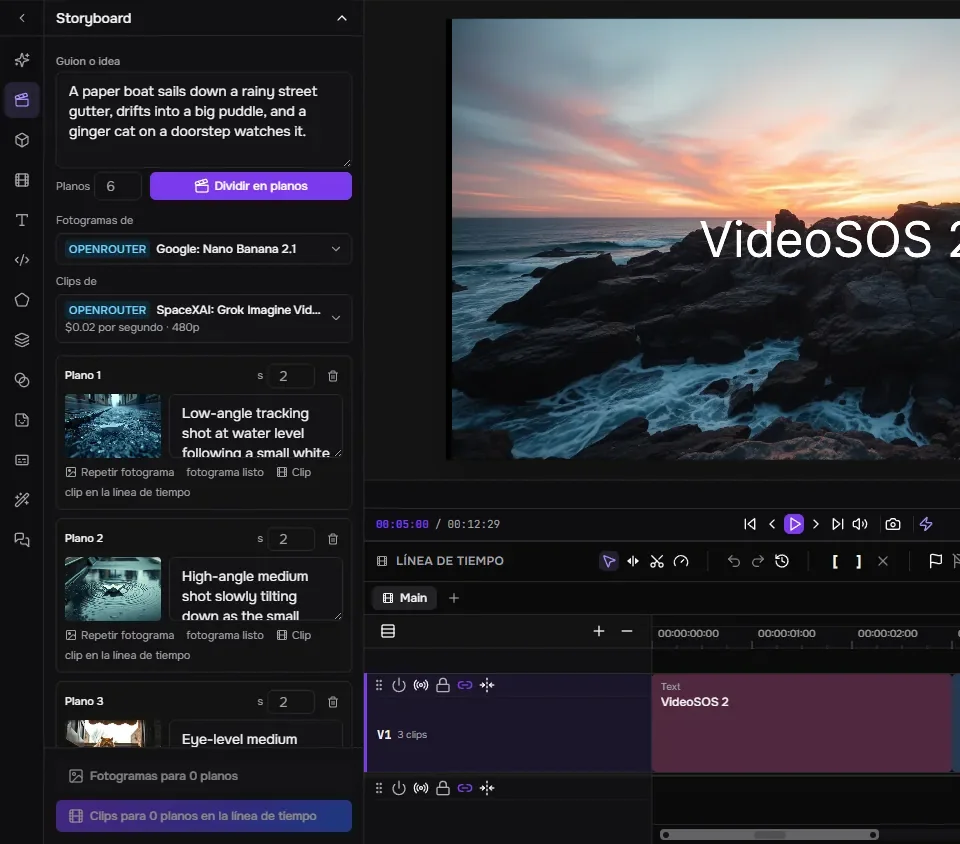
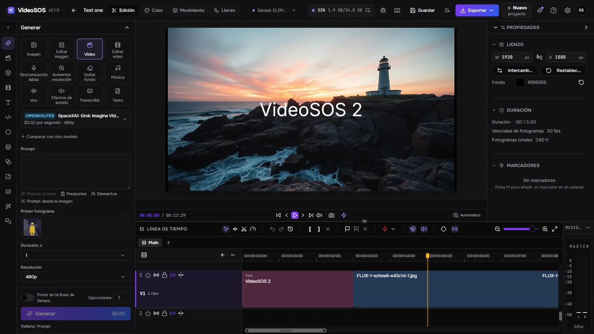
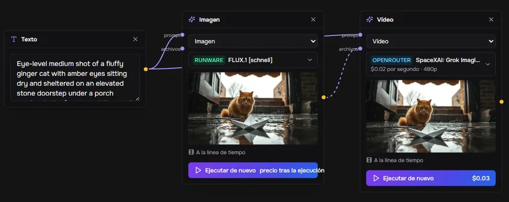
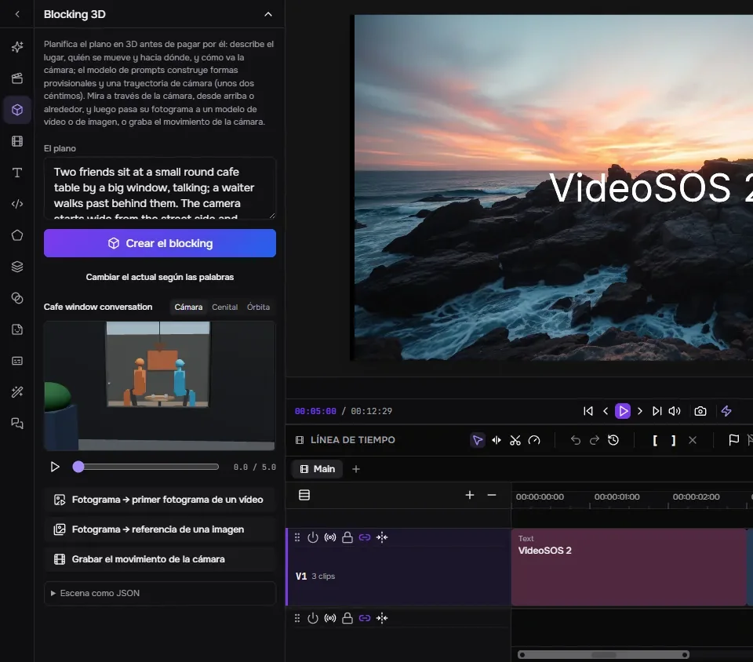
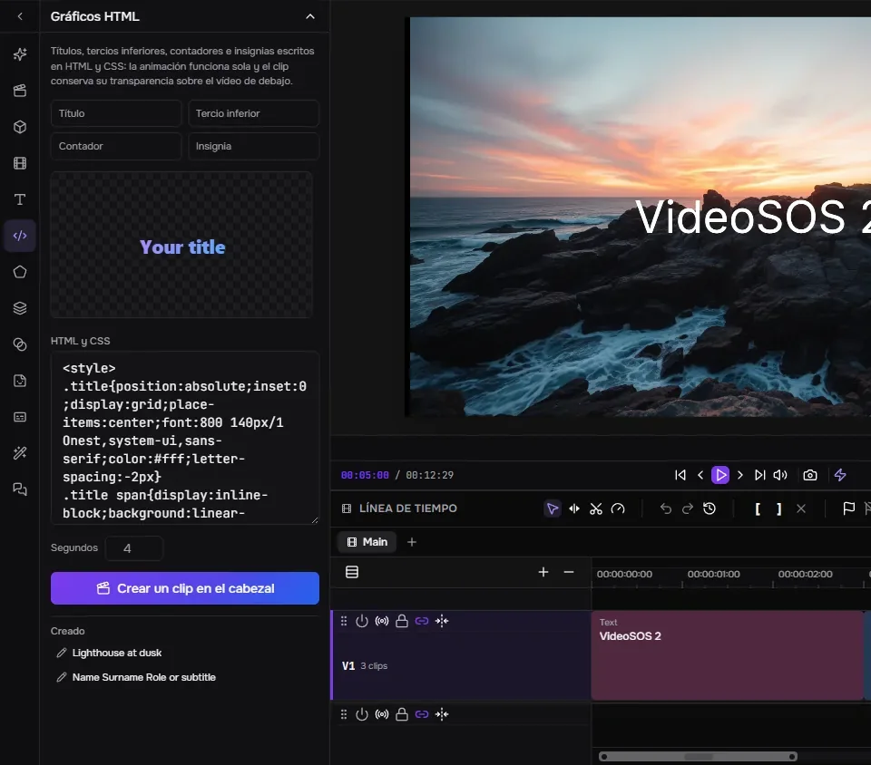
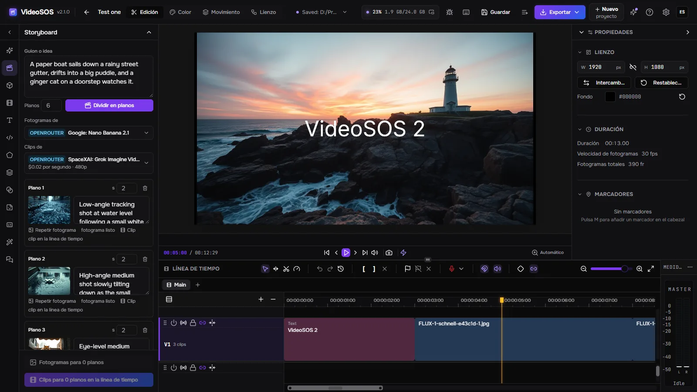
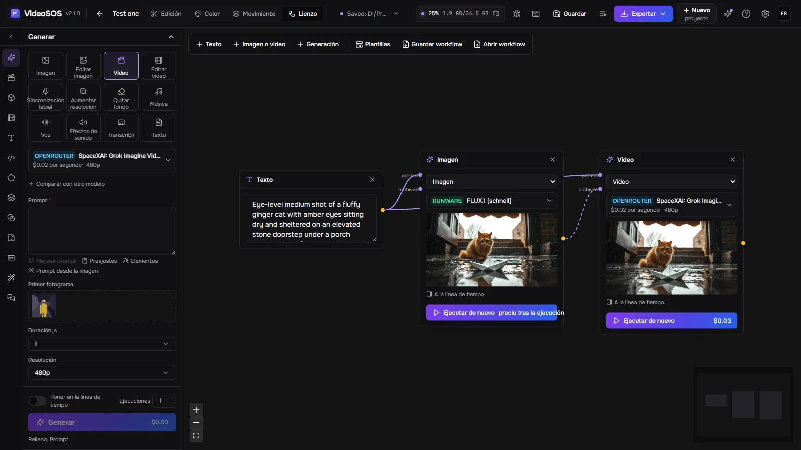
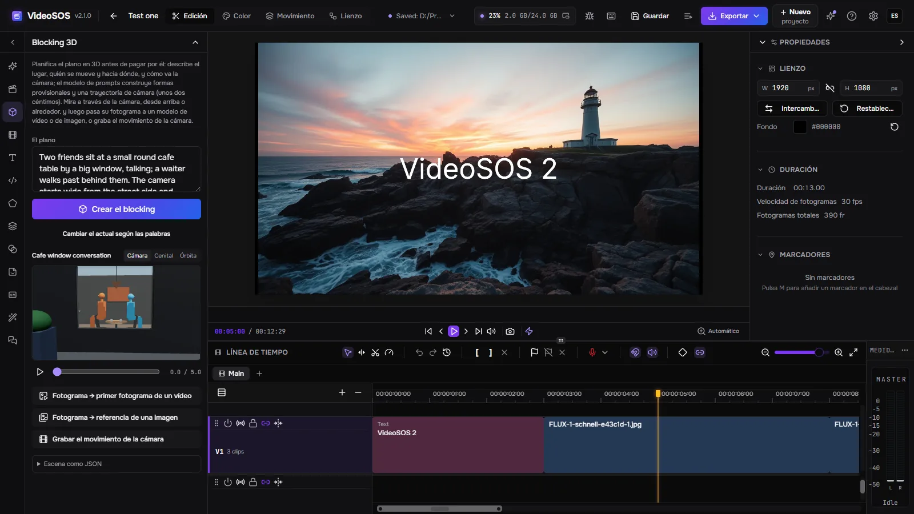
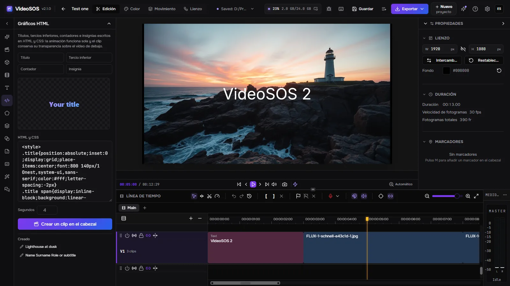

Storyboard

Un modelo de lenguaje divide un guion en planos; cada plano recibe un fotograma de un modelo de imagen y un clip de un modelo de vídeo que arranca en ese fotograma, y los clips se colocan en la línea de tiempo uno tras otro.
VideoSOS reúne los mejores modelos de imagen, vídeo, música y voz de OpenRouter, fal y Runware junto a un auténtico editor multipista. Planifica la película en un storyboard, un lienzo de nodos y un blocking 3D, genera cada plano con tus propias claves al precio que se muestra antes de ejecutar y móntalo en un vídeo terminado, o deja que un agente de IA lo haga contigo.
Windows 10/11, Linux (experimental) y macOS con Apple Silicon (experimental). Se necesita una tarjeta gráfica con WebGPU para la vista previa y la exportación. La generación requiere una clave de OpenRouter, fal o Runware: les pagas directamente a ellos.

Generación, planificación y edición en un solo programa, con tus archivos en tu disco.

Un modelo de lenguaje divide un guion en planos; cada plano recibe un fotograma de un modelo de imagen y un clip de un modelo de vídeo que arranca en ese fotograma, y los clips se colocan en la línea de tiempo uno tras otro.

Texto, imágenes, vídeos y generaciones son nodos unidos por lo que se transmiten.

Describe el plano y un modelo de lenguaje lo construye con formas provisionales, personas de pie y sentadas, sus movimientos y la trayectoria de la cámara.

Títulos, tercios inferiores, contadores e insignias en HTML y CSS, con vista previa en directo y convertidos en un clip con transparencia que se superpone al vídeo en el cabezal de reproducción.
Doce tareas: imágenes, ediciones, vídeo a partir de texto o de un fotograma, edición de vídeo, sincronización labial, escalado, eliminación de fondo, música, voces, efectos de sonido, transcripciones y textos, con más de mil modelos de OpenRouter, fal y Runware, leídos en directo de los proveedores.
El formulario se construye a partir de la descripción del propio modelo y el precio se calcula con ella antes de pulsar Generar; tras la ejecución se registra la factura del propio proveedor. Un límite diario frena a los agentes.
El mismo prompt se envía hasta a dos modelos más, y los resultados quedan lado a lado con sus precios.
Un personaje, un objeto o un lugar guardado con un nombre y sus imágenes: @nombre en un prompt se los envía al modelo, así que la misma cara vuelve plano tras plano.
Una ejecución se dibuja en la línea de tiempo donde va a caer mientras se ejecuta; una parte de cualquier clip se genera de nuevo en su sitio; el clip siguiente continúa desde el último fotograma del anterior.
Varias pistas de vídeo y audio, recortes ripple, rolling, slip y slide, transiciones, fotogramas clave con gráfico de Bézier, máscaras, modos de fusión, corrección de color con scopes, texto, formas y subtítulos. Exportación rápida a MP4, WebM, MOV o MKV en la tarjeta gráfica, o FCPXML para Final Cut, DaVinci Resolve y Premiere.
Conecta Claude Code, Claude Desktop, Cursor o Codex y el agente hace lo que hace la ventana: elige modelos, estima precios, genera, edita la línea de tiempo paso a paso, hace el blocking de planos en 3D, crea gráficos y exporta. La línea de tiempo se guarda antes de cada edición del agente, una edición se puede ensayar primero, y puedes pedir aceptar cada una tú mismo.
Un modelo de OpenRouter de tu elección maneja el programa con las mismas herramientas, paso a paso, con el coste de cada paso y un botón Detener.
Un enlace de YouTube, cualquier sitio que yt-dlp conozca o un archivo directo entra en la biblioteca con progreso, cancelación y reanudación.
Sin cuenta nuestra: pagas a los proveedores directamente. Los proyectos y las generaciones son archivos normales en tu disco; un trabajo se guarda antes de enviarse y nunca se paga dos veces, y los resultados se descargan antes de que caduquen los enlaces de los proveedores.
Inglés, ruso, alemán, español, francés, japonés, coreano, portugués de Brasil, turco y chino, incluidos los efectos y sus parámetros.
Un proxy para los proveedores y las descargas, y acceso desde la red: un navegador en otro ordenador o en un móvil abre la misma interfaz con una clave de acceso mientras todo se ejecuta aquí.
El programa en sí, en tu idioma.




Sí. VideoSOS es gratuito y de código abierto (MIT). La generación se paga a los proveedores con tus propias claves; la edición y la exportación no cuestan nada.
Con nosotros, no. Necesitas una clave de al menos un proveedor (OpenRouter, fal o Runware) y le pagas directamente a él; VideoSOS nunca ve tu dinero y nunca muestra tus claves a los agentes.
Depende del modelo: el formulario de generación muestra el precio antes de cada ejecución, desde fracciones de centavo por una imagen rápida hasta dólares por un vídeo largo, y el historial guarda lo que costó cada ejecución. Un storyboard aprueba fotogramas baratos antes de los clips de pago.
Solo lo que necesita una generación va al proveedor que elegiste. Los proyectos, el material y los resultados se quedan en tu disco; las estadísticas anónimas están desactivadas salvo que las actives, y nunca incluyen prompts, archivos ni claves.
Windows 10 y 11 x64; Linux x86-64 y macOS con Apple Silicon como versiones experimentales. Una tarjeta gráfica con WebGPU ejecuta la vista previa y la exportación.
Conecta Claude Code, Claude Desktop, Cursor o Codex y el agente hace lo que hace la ventana: elige modelos, estima precios, genera, edita la línea de tiempo paso a paso, hace el blocking de planos en 3D, crea gráficos y exporta. La línea de tiempo se guarda antes de cada edición del agente, una edición se puede ensayar primero, y puedes pedir aceptar cada una tú mismo.
claude mcp add --transport http videosos http://127.0.0.1:8796/mcp
Una carcasa de Tauri ejecuta el servidor de Rust en el mismo proceso; la ventana es una bifurcación del editor FreeCut con el panel de generación, el storyboard, el lienzo, el blocking 3D y el puente del agente añadidos. Los trabajos viven en SQLite y los archivos, en tu disco.
React window (FreeCut fork) ─┐
├─ VideoSOS.exe (Tauri shell + Rust/axum server inside)
Rust axum server ────────────┘ │
├─ OpenRouter · fal · Runware (your keys)
└─ MCP http://127.0.0.1:8796/mcp